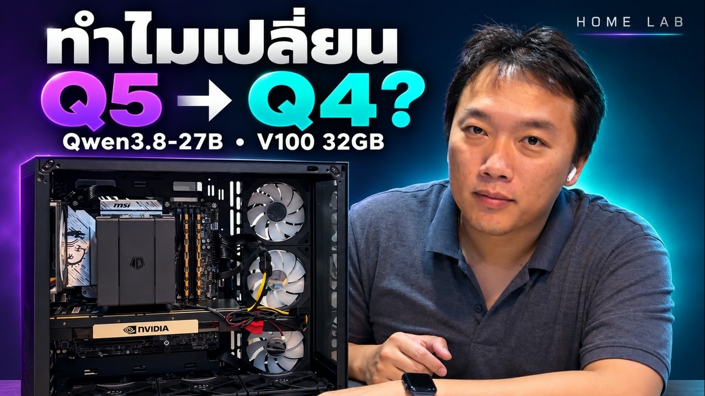
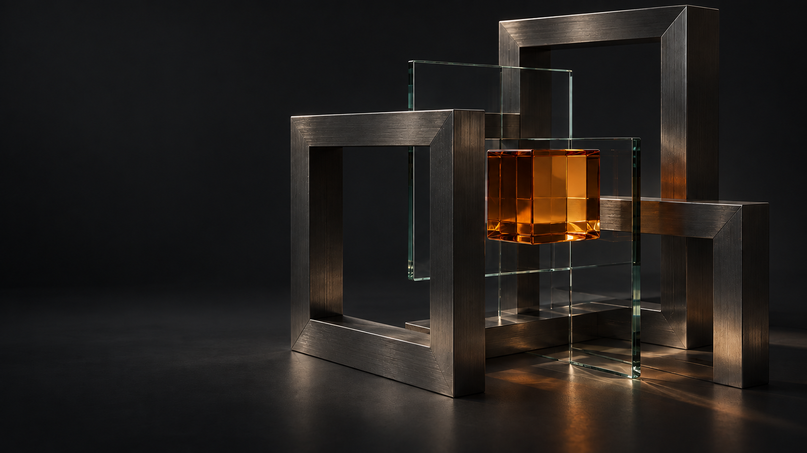

▶วิดีโอแล็บ / แล็บในบ้าน
สร้างทีม AI
ไว้ในบ้านของเรา.
เริ่มจากฮาร์ดแวร์ที่เลือกเอง ไปจนถึงการทดลองใช้โมเดล เปิดให้เห็นทั้งวิธีคิดและสิ่งที่ยังต้องเรียนรู้
ดูคลิปต้นฉบับ ↗ดูผลชุดเต็ม 24 กรณี × 3 รอบ (72 ผล) ↗ ดูชุดทำงานจริง 12 ผล ↗
เราทดลองโมเดลกับงานหลายแบบ
พร้อมเปิดให้ดูโจทย์ คำตอบ เวลา และข้อจำกัด

ตามไปดูเบื้องหลังการสร้างเครื่อง
และการทดลอง AI ของเรา

▶เริ่มจากฮาร์ดแวร์ที่เลือกเอง ไปจนถึงการทดลองใช้โมเดล เปิดให้เห็นทั้งวิธีคิดและสิ่งที่ยังต้องเรียนรู้
ดูคลิปต้นฉบับ ↗ไม่ใช่แค่โมเดลไหนคะแนนสูงกว่า
แต่ทำงานของคุณได้ดีแค่ไหน
ทดสอบครบ 24 กรณี × 3 seed
เปิดให้ดูทั้งคำตอบ จุดที่ผ่าน และจุดที่ต้องแก้
R9700 สองใบ · เว็บแชต · ความรู้บริษัท
ประเมินก่อนจัดสเปกให้ใช้งานจริง
ยังไม่รวมเป็นคะแนนเดียว เพราะแต่ละงานใช้เกณฑ์ต่างกัน
อัปผลครบ 24 กรณี × 3 seed แล้ว พร้อมเปิดโจทย์ คำตอบ และข้อจำกัดของแต่ละรอบ
โจทย์ข้อความชุดเดียวกัน 63 รอบ — เปรียบเทียบเวลาเริ่มตอบและเวลารวม พร้อมแยกรอบที่ชนเพดาน token; ยังไม่ใช่คะแนนคุณภาพ
ดูผลเวลา DGX เทียบ V100 →อัปเดต: ตรวจชุดข้อความ63รอบ พร้อมค้นเว็บ ค้นภาพ บทความ และบทพูด12รอบแล้ว ดูข้อผิดพลาดและผลงานรายรอบแยกจากกราฟเวลาเดิม
ดูผลทดสอบ DGX Flash ครบชุด →แนวคิดระบบ AI ภายในองค์กรที่รวมเครื่อง ซอฟต์แวร์ และบริการดูแล เริ่มจากโจทย์เล็กที่มีคุณค่า แล้วค่อยขยาย
เริ่มจากงานของคุณ ↗ยังไม่เปิดรับส่งข้อมูลผ่านเว็บไซต์นี้ กรุณาอย่าส่งข้อมูลลับ
ยังไม่เปิดช่องทางติดต่อบนเว็บไซต์ · ไม่รับหรือเก็บข้อมูล